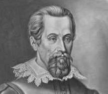

Kepler, Johannes (1571-1630), astrónomo y filósofo alemán, famoso por formular y verificar las tres leyes del movimiento planetario conocidas como leyes de Kepler.

Kepler nació el 27 de diciembre de 1571, en Weil der Stadt, en Württemberg, y estudió teología y clásicas en la Universidad de Tübingen. Allí le influenció un profesor de matemáticas, Michael Maestlin, partidario de la teoría heliocéntrica del movimiento planetario desarrollada en principio por el astrónomo polaco Nicolás Copérnico. Kepler aceptó inmediatamente la teoría copernicana al creer que la simplicidad de su ordenamiento planetario tenía que haber sido el plan de Dios. En 1594, cuando Kepler dejó Tübingen y marchó a Graz (Austria), elaboró una hipótesis geométrica compleja para explicar las distancias entre las órbitas planetarias —órbitas que se consideraban circulares erróneamente. (Posteriormente, Kepler dedujo que las órbitas de los planetas son elípticas; sin embargo, estos primeros cálculos sólo coinciden en un 5% con la realidad.) Kepler planteó que el Sol ejerce una fuerza que disminuye de forma inversamente proporcional a la distancia e impulsa a los planetas alrededor de sus órbitas. Publicó sus teorías en un tratado titulado Mysterium Cosmographicum en 1596. Esta obra es importante porque presentaba la primera demostración amplia y convincente de las ventajas geométricas de la teoría copernicana.
Kepler fue profesor de astronomía y matemáticas en la Universidad de Graz desde 1594 hasta 1600, cuando se convirtió en ayudante del astrónomo danés Tycho Brahe en su observatorio de Praga. A la muerte de Brahe en 1601, Kepler asumió su cargo como matemático imperial y astrónomo de la corte del emperador Rodolfo II. Una de sus obras más importantes durante este periodo fue Astronomía nova (1609), la gran culminación de sus cuidadosos esfuerzos para calcular la órbita de Marte. Este tratado contiene la exposición de dos de las llamadas leyes de Kepler sobre el movimiento planetario. Según la primera ley, los planetas giran en órbitas elípticas con el Sol en un foco. La segunda, o regla del área, afirma que una línea imaginaria desde el Sol a un planeta recorre áreas iguales de una elipse durante intervalos iguales de tiempo. En otras palabras, un planeta girará con mayor velocidad cuanto más cerca se encuentre del Sol.
En 1612 Kepler se hizo matemático de los estados de la Alta Austria. Mientras vivía en Linz, publicó su Harmonices mundi, Libri (1619), cuya sección final contiene otro descubrimiento sobre el movimiento planetario (tercera ley): la relación del cubo de la distancia media (o promedio) de un planeta al Sol y el cuadrado del periodo de revolución del planeta es una constante y es la misma para todos los planetas.
Hacia la misma época publicó un libro, Epitome astronomiae copernicanae (1618-1621), que reúne todos los descubrimientos de Kepler en un solo tomo. Igualmente importante fue el primer libro de texto de astronomía basado en los principios copernicanos, y durante las tres décadas siguientes tuvo una influencia capital convirtiendo a muchos astrónomos al copernicanismo kepleriano.
La última obra importante aparecida en vida de Kepler fueron las Tablas rudolfinas (1625). Basándose en los datos de Brahe, las nuevas tablas del movimiento planetario reducen los errores medios de la posición real de un planeta de 5 °a 10'. El matemático y físico inglés Isaac Newton se basó en las teorías y observaciones de Kepler para formular su ley de la gravitación universal.
Kepler también realizó aportaciones en el campo de la óptica y desarrolló un sistema infinitesimal en matemáticas, que fue un antecesor del cálculo,
Murió el 15 de noviembre de 1630 en Regensburg.
Kepler, Leyes de, tres leyes acerca de los movimientos de los planetas formuladas por el astrónomo alemán Johannes Kepler a principios del siglo XVII. Véase Sistema Solar. Kepler basó sus leyes en los datos planetarios reunidos por el astrónomo danés Tycho Brahe, de quien fue ayudante. Las propuestas rompieron con una vieja creencia de siglos de que los planetas se movían en órbitas circulares. Ésta era una característica del sistema de Tolomeo, desarrollado por el astrónomo de Alejandría Tolomeo en el siglo II d.C., y del sistema de Copérnico, propuesto por el astrónomo polaco Nicolás Copérnico, en el siglo XVI. De acuerdo con la primera ley de Kepler los planetas giran alrededor del Sol en órbitas elípticas en las que el Sol ocupa uno de los focos de la elipse. La segunda ley formula que las áreas barridas por el radio vector que une el centro del planeta con el centro del Sol son iguales en lapsos iguales; como consecuencia, cuanto más cerca está el planeta del Sol con más rapidez se mueve. La tercera ley establece que la relación de la distancia media, d, de un planeta al Sol, elevada al cubo, dividida por el cuadrado de su periodo orbital, t, es una constante, es decir, d3/t2 es igual para todos los planetas.
Estas leyes desempeñaron un papel importante en el trabajo del astrónomo, matemático y físico inglés del siglo XVII Isaac Newton, y son fundamentales para comprender las trayectorias orbitales de la Luna y de los satélites artificiales. Johannes Kepler creía en la teoría heliocéntrica de Copérnico, según la cual la Tierra gira alrededor del Sol, que permanece estacionario. Kepler formuló una descripción matemática precisa de las órbitas planetarias, que proporcionó el rigor matemático necesario al modelo heliocéntrico. Sus aportaciones incrementaron espectacularmente el conocimiento de los científicos sobre el movimiento planetario. Isaac Newton empleó los trabajos de Kepler para formular su teoría de la gravitación universal.